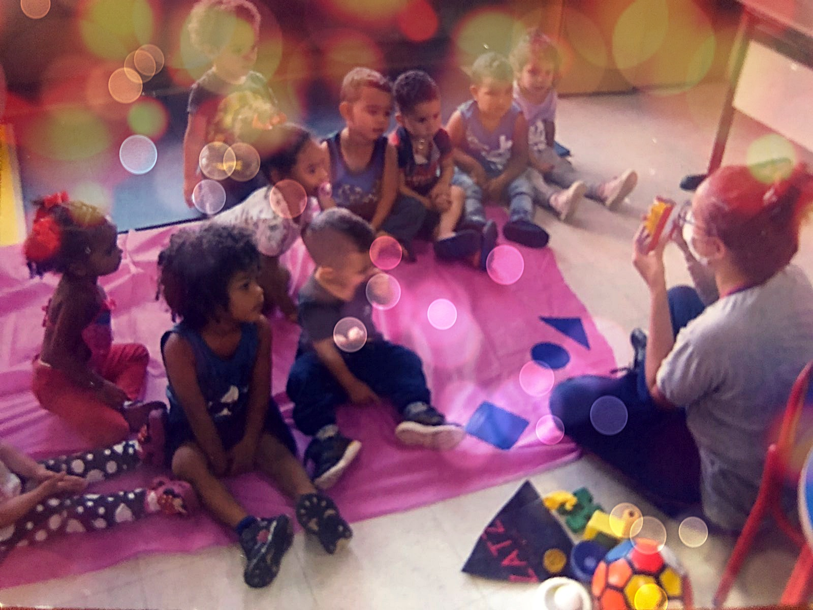

Setembro de 2021
Help Desk e Educação

Durante a minha experiência com o Service Desk aprendi muito sobre o
contato inicial com o usuário para resolução de problemas técnicos,
atualização de status das solicitações, configuração dos dispositivos,
instalação de softwares, suporte aos usuários com a documentação
adequada para que os mesmos pudessem usar corretamente os aplicativos,
aprendi sobre a manutenção da infraestrutura de TI, sempre com o foco
de proporcionar uma experiência positiva aos usuários finais e
satisfação dos clientes, e desde então me peguei atraída pela área da
Técnologia, porém no ano de 2021 me formei em Licenciatura em
Pedagogia e atuei por 11 meses na área como Educadora no Ensino
Infantil, antes de completar 1 ano de profissão resolvi deixar o cargo
para cursar Análise e Desenvolvimento de Sistemas.